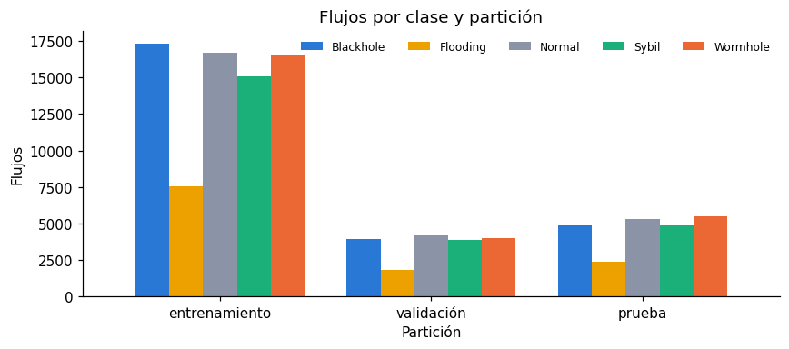
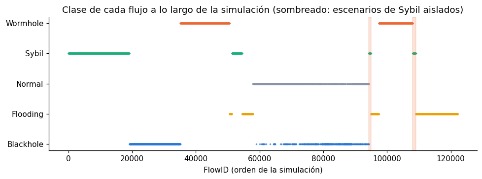
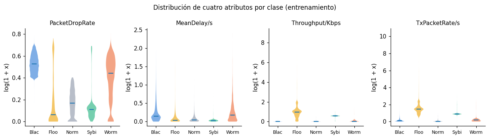

Datos: EDA, auditoría y ficha de datos#
Ficha de datos#
Campo |
Contenido |
|---|---|
Fuente |
UAVIDS-2025 [Zeng et al., 2025, Zeng et al., 2025], Zenodo, DOI 10.5281/zenodo.15336998 |
Licencia |
CC BY 4.0 |
Periodo y generación |
Simulación de enjambres de UAV en NS-3.24 con movilidad BOID, publicada en 2025 |
Observaciones |
122 171 flujos; 8 219 duplicados exactos excluidos antes de partir |
Variables |
16 estadísticos por flujo; FlowID, IP, puertos y protocolo se excluyen por ser identificadores |
Objetivo y tarea |
Clase del flujo (Blackhole, Flooding, Normal, Sybil y Wormhole): clasificación multiclase |
Métrica primaria |
F1 macro, con margen de relevancia δ = 0,01 heredado del E1 |
Partición |
Bloques de 1000 flujos: 73 267 de entrenamiento, 17 802 de validación y 22 883 de prueba, sellada en el E1 con SHA-256 |
Sesgos conocidos |
Escenarios de simulación largos y de una sola clase; dependencia L3.2 entre particiones (capítulo 1) |
Usos inadecuados |
Desplegar el modelo en una red real sin validarlo con tráfico real; tomar decisiones automáticas de aislamiento de nodos |

| clase | Blackhole | Flooding | Normal | Sybil | Wormhole |
|---|---|---|---|---|---|
| particion | |||||
| entrenamiento | 17342 | 7569 | 16698 | 15085 | 16573 |
| validación | 3929 | 1842 | 4176 | 3855 | 4000 |
| prueba | 4839 | 2365 | 5298 | 4868 | 5513 |
Las cinco clases tienen entre 7 569 (Flooding) y 17 342 (Blackhole) flujos en entrenamiento: un desbalance moderado, con Flooding como clase minoritaria en las tres particiones.
Esto quiere decir que la exactitud global sobrestimaría el desempeño en Flooding, que es menos frecuente, mientras que el F1 macro da el mismo peso a cada clase.
Por tal motivo, se mantiene el F1 macro como métrica primaria y la pérdida ponderada por clase (\(w_c = n / (K n_c)\)) para todos los modelos, como en el E2.
Estructura por escenario: el panel específico del problema#

La clase de cada flujo no se reparte al azar: forma tramos largos y contiguos, que son los escenarios de simulación (por ejemplo, Sybil de FlowID 1 a 19 000 y Wormhole de 36 001 a 49 000), y Blackhole y Normal aparecen intercaladas en una región de unos 36 000 flujos.
En ese sentido, un bloque de 1000 flujos casi siempre contiene una sola clase y pertenece a un escenario que tiene otros bloques en entrenamiento. Por eso la partición por bloques evita mezclar vecinos inmediatos pero no aísla los escenarios, que es la dependencia L3.2 del capítulo 1.
De ahí que se reporte el desempeño con y sin los escenarios aislados, y que la generalización a un escenario nuevo se trate como un estudio de cambio de distribución y no como el resultado principal.
Distribución de los atributos#

Flooding y Sybil se separan del resto por sus tasas: la mediana de TxPacketRate/s es 3,35 en Flooding y 1,43 en Sybil, frente a menos de 0,2 en las otras tres clases. La tasa de pérdida separa a Blackhole (mediana 0,69) y Wormhole (0,55) de Normal, Sybil y Flooding (por debajo de 0,2), pero no a esas dos clases entre sí: el rango intercuartílico de Wormhole (0,29 a 0,73) contiene casi todo el de Blackhole (0,59 a 0,80), y en MeanDelay/s ocurre lo mismo.
Lo anterior indica que un umbral sobre un solo atributo distingue los ataques de saturación y de suplantación, pero no los dos ataques de enrutamiento. La frontera entre Blackhole y Wormhole depende de combinaciones de atributos, así que un modelo con umbrales por eje y uno de funciones suaves pueden equivocarse en flujos distintos.
Por ello, se diseña un modelo que combine los dos sesgos y no uno que solo afine un umbral.
Conjuntos de datos adicionales#
Los tres conjuntos adicionales se eligieron el 22/11/2026, antes de entrenar cualquier modelo con ellos, y no se usaron para diseñar. Su procedencia, licencia y SHA-256 están en data/procedencia_conjuntos_adicionales.md; la partición es agrupada por bloques de 250 filas contiguas dentro de cada clase, porque las fuentes vienen ordenadas por ejecución de ataque.
| Conjunto | Fuente | Filas en la fuente | Duplicadas eliminadas | Clases | Atributos | Entrenamiento / validación / prueba | Bloques compartidos | |
|---|---|---|---|---|---|---|---|---|
| 0 | uav_nidd | Hadi et al. (2025) | 149434 | 112628 | 6 | 43 | 24705 / 5808 / 5804 | 0 |
| 1 | unsw_nb15 | Moustafa y Slay (2015) | 2540047 | 516060 | 9 | 38 | 28000 / 6000 / 6000 | 0 |
| 2 | unr_idd | Das et al. (2023) | 37411 | 27 | 6 | 18 | 26153 / 5615 / 5616 | 0 |
Los tres conjuntos difieren de UAVIDS-2025 en al menos dos ejes:
UAV-NIDD [Hadi et al., 2025]: proviene de un banco real con drones PX4 y DJI, tiene 43 atributos y otros tipos de ataque.
UNSW-NB15 [Moustafa and Slay, 2015]: es tráfico de una red empresarial de laboratorio, tiene 2,5 millones de registros en la fuente y un desbalance fuerte.
UNR-IDD [Das et al., 2023]: usa estadísticos de puertos de una red definida por software en lugar de flujos, es más pequeño y tiene una clase del 2,7 %.
UAV-CAS [Mishra et al., 2026], la primera opción, se descartó porque IEEE DataPort exige una suscripción de pago para descargarlo, lo que impide la reproducción independiente.